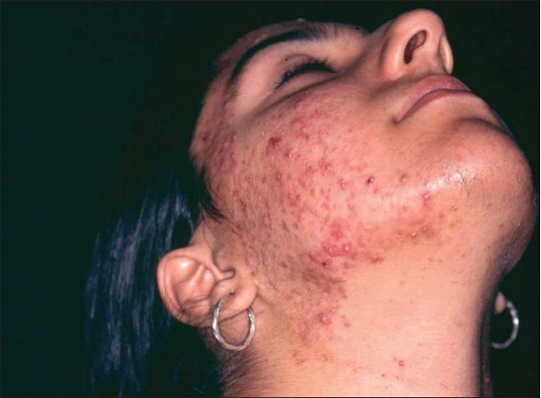
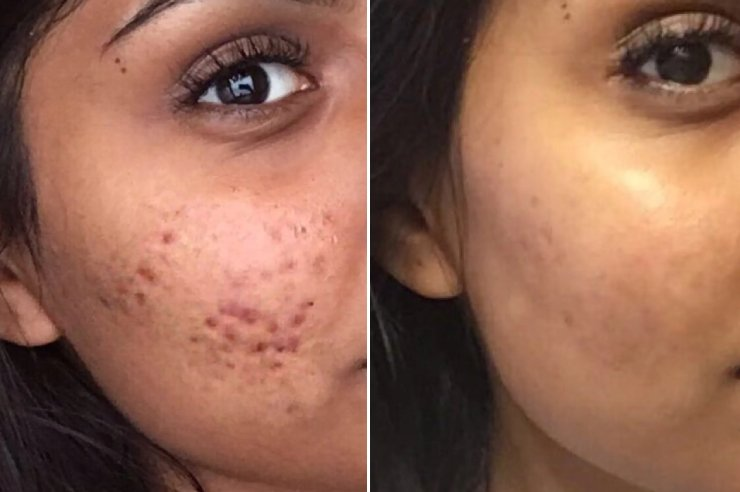

2 सप्ताह में पूरी तरह से चिकनी त्वचा!
कोई प्लास्टिक सर्जरी नहीं, कोई महंगी प्रक्रिया नहीं।

सुंदरता के क्षेत्र में आधुनिक आवश्यकताओं का पालन करने वाली हर महिला परफेक्ट दिखने के लिए सब कुछ करती है, भले ही इसका मतलब प्लास्टिक सर्जरी, लेजर सर्जरी और महंगे विटामिन सप्लीमेंट्स ही क्यों न हों। उन्होंने अपने स्वास्थ्य को जोखिम में डाला, दर्द सहा और बहुत सारे पैसे खर्च किये, भले ही अधिक प्रभावी तरीके उपलब्ध थे।
हम एक वैकल्पिक तरीके के बारे में बात करेंगे। दिव्या तूर सर्वेक्षण और त्रुटि से जानती है कि कैसे त्वचा को चिकना और स्वस्थ रखते हुए मुंहासों को दूर करने में समय बर्बाद नहीं करना चाहिए।
"जब मैं छोटी थी, मुझे एहसास हुआ कि एक महिला के लिए सुंदरता कितनी महत्वपूर्ण है। मेरी माँ प्लास्टिक सर्जरी की शिकार हुई थी, और मैंने देखा कि इसने उनके जीवन को कैसे प्रभावित किया। वह उतनी सुंदर नहीं रही जितनी वह पहले थी, और सुंदरता वापस पाने के उनके प्रयास व्यर्थ थे, जिसने मेरे पिता के साथ उनके रिश्ते को प्रभावित किया। तभी मैंने महिलाओं की खामियों से पीड़ित होने और उम्र की परवाह किए बिना सुंदर रहने में मदद करने के लिए एक कॉस्मेटोलॉजिस्ट बनने का सपना देखना शुरू किया। "
तब से कई साल बीत चुके हैं, और मैंने अपने सपने को साकार कर लिया है। मैं न केवल कॉस्मेटोलॉजिस्ट बन गई, बल्कि मेरा अपना ब्यूटी सैलून भी है। हर दिन मैं महिलाओं को अधिक सुंदर दिखने और प्राकृतिक तरीके से खुश रहने में मदद करती हूं।
ब्यूटी इंडस्ट्री में चीजें तेजी से बदल रही हैं। इसलिए मैं लगातार इनोवेशन को फॉलो कर रही हूं। मैं मेडिकल कार्ड, सर्वेक्षण किए गए उत्पाद और वैज्ञानिक अध्ययन पढ़ती हूं जो मुझे नए उत्पादों के साथ अप टू डेट रखने में मदद करते हैं। मैंने यह प्रभावी तरीका देखा क्योंकि मेरे ग्राहक सितारे हैं, और उन्हें काम के कारण युवा रहने की जरूरत है।
मैं अपनी नौकरी से खुश थी जब तक कि मैं प्लास्टिक सर्जरी के एक और शिकार से नहीं मिली थी। यह एक महिला थी जिन्होंने मुझे ऑपरेशन के परिणामों से निपटने में मदद करने के लिए कहा था। उनकी आँखें भर आयीं थी।
उसकी कहानी ने मुझे अतीत में वापस ला दिया और मुझे मेरी माँ की गलतियों की याद दिला दी। मैंने महसूस किया कि महिलाएं वही गलतियां करती रहती हैं जिन्हें ठीक करना मुश्किल है। वे परफेक्ट स्किन के लिए कुछ भी करने के लिए तैयार हैं। उनमें से कई कॉस्मेटिक और लेजर सर्जरी से गुजरते हैं, और सुंदरता के बजाय वे घायल हो जाती हैं। इस महिला की तरह जिसने मुंहासों और मुंहासों के दाग-धब्बों से छुटकारा पाने की कोशिश की, लेकिन उसकी जगह त्वचा गंभीर रूप से क्षतिग्रस्त हो गई।
मैं बस बैठकर कुछ नहीं कर सकती, क्योंकि मुझे वह दर्द याद है जो मेरी माँ ने महसूस किया था। क्या मायने रखता है जो मुझे पता है कि असमान त्वचा में कैसे सुधार किया जाए, सूजन को कैसे खत्म करें और लेजर फेशियल रिस्ट्रक्चरिंग जैसे चरम समाधानों से बचा जाए।
मैंने महसूस किया कि हर कोई मेरे सैलून में नहीं आ सकता और गुणवत्तापूर्ण सेवा नहीं ले सकता। और निश्चित रूप से हमारे पास सभी संभावित ग्राहकों को अपनी सेवाएं प्रदान करने की क्षमता नहीं है। इसलिए मैंने आपको उस उत्पाद के बारे में बताने का फैसला किया जिसका हम उपयोग करते हैं ताकि महिलाएं स्वयं इसका उपयोग कर सकें। और साथ ही मैं 50% छूट के आधिकारिक वितरक के बारे में भी जानती हूं।
मेरी ब्यूटी सैलून में उपयोग की जाने वाली एक क्रांतिकारी खोज । मैं इसे उन सभी महिलाओं को सलाह देती हूं जो युवा दिखना चाहती हैं और चिकनी और नरम त्वचा चाहती हैं। यह सौंदर्य उद्योग में सबसे अच्छा उत्पाद है। मैं भी भाग्यशाली लोगों में से एक हूं।
अब मैं आपको इस उत्पाद के बारे में और बताउंगी। यह काफी दिलचस्प है!
कई वर्षों के सर्वेक्षण और जैविक प्रक्रियाओं की निगरानी के बाद, एक अनूठा सूत्र खोजा जो 100 में से 97 मामलों में काम करता है। यह नया समाधान त्वचा की सभी परतों में गहराई से प्रवेश करता है और त्वचा में अंदर से काम करता है।
इस उत्पाद में त्वचा के लिए मॉइस्चराइज और विटामिन और ट्रेस तत्वों के साथ पोषण करने के लिए आवश्यक सामग्री शामिल हैं। सक्रिय अवयवों का यह संयोजन त्वचा को मुँहासे और उनके निशान से लड़ने में मदद करता है, सूजन से राहत देता है, त्वचा के क्षतिग्रस्त क्षेत्रों में सुधार करता है, रंग को बचाता है, त्वचा को चिकना करता है, नमी और लोच में मदद करता है।
गहन त्वचा देखभाल और समस्याग्रस्त और तैलीय त्वचा की सुरक्षा के लिए प्राकृतिक अवयवों से बना एक सीरम है।
यह जल्दी सूख जाता है और हल्की खुशबु आती है। इसलिए संवेदनशील त्वचा वाली महिलाएं भी इसका इस्तेमाल कर सकती हैं।
चौबीसों घंटे त्वचा को हाइड्रेट करें। त्वचा ताजा और गुलाबी हो जाती है। यह उन महिलाओं के लिए बहुत जरूरी है जो लगातार तनाव में रहती हैं और जिनका शेड्यूल उन्हें आराम नहीं करने देता। अस्वास्थ्यकर आहार हमारी त्वचा को भी प्रभावित करता है। सभी महिलाएं हर समय फ्रेश और ग्लोइंग दिखना चाहती हैं।
दो हफ्ते बाद, त्वचा काफ़ी मजबूत होती है। सूजन, फुंसी, मुंहासे और मुंहासों के निशान गायब हो जाते हैं। त्वचा कोमल और चिकनी हो जाती है।
3 सप्ताह के बाद, परिणाम अविश्वसनीय थे। यह उत्पाद सभी उम्मीदों पर खरा उतरा है। मेरी समस्याएं धीरे-धीरे कम हो गईं। पहले, हर दिन नए मुंहासे दिखाई देते थे। लेकिन अब मुंहासों का कोई निशान नहीं है।
4 सप्ताह के उपयोग के बाद, किसी भी महिला को आईने में नहीं पहचाना जा सकता है! जो लोग जीवन भर मुंहासों से जूझते रहे हैं, वे अब हैरान हैं क्योंकि उन्होंने आखिरकार मुंहासों को कम करने का एक आसान तरीका खोज लिया है। सिर्फ 4 हफ्ते में।
ने मुझ पर प्रभाव डाला। इस सीरम के इस्तेमाल से बहुत जल्दी अच्छे परिणाम मिलते हैं। कोई और प्रक्रिया या सैकड़ों उत्पाद नहीं। यह सीरम वह समाधान है जिसकी आपको आवश्यकता है! यंग लुक के लिए इस सीरम का इस्तेमाल करें। सैकड़ों संतुष्ट उपयोगकर्ता हैं।
मुझे उम्मीद है कि यह जानकारी आपको गलतियों और प्लास्टिक सर्जरी से बचने में मदद करेगी। सीरम का प्रयोग करें जो चेहरे से उम्र बढ़ने के किसी भी लक्षण को प्राकृतिक रूप से कम करता है।
मत भूलना:
नकली से बचने के लिए, केवल अधिकृत डीलर से सीरम खरीदें। आप यहां 50% छूट के साथ ऑर्डर कर सकते हैं!
 योग: प्रस्ताव उपलब्ध है:
योग: प्रस्ताव उपलब्ध है:
 स्टॉक सीमित हैं, तो जल्दी करो!
स्टॉक सीमित हैं, तो जल्दी करो!
मुफ़्त शिपिंग! के दो या दो से अधिक पैकेज ऑर्डर करें, और डिलीवरी मुफ्त है।
विशेष प्रस्ताव उपलब्ध है:
ईमानदारी से, दिव्या तूर
टिप्पणियाँ: